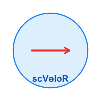

Visualization Gallery
Zaoqu Liu
2026-01-26
Source:vignettes/visualization-gallery.Rmd
visualization-gallery.RmdIntroduction
scVeloR provides a comprehensive suite of visualization tools for exploring RNA velocity results. This gallery demonstrates the various plot types available and their customization options.
Velocity Embedding Plot
The velocity embedding plot shows velocity arrows overlaid on the low-dimensional embedding (UMAP/tSNE).
Basic Usage
# Basic velocity arrows
plot_velocity(seurat_obj, embedding = "umap")
# Colored by cluster
plot_velocity(seurat_obj,
embedding = "umap",
color_by = "seurat_clusters")
# Colored by latent time
plot_velocity(seurat_obj,
embedding = "umap",
color_by = "latent_time")Customization Options
# Customize arrow appearance
plot_velocity(seurat_obj,
embedding = "umap",
color_by = "celltype",
arrow_scale = 1.5, # Arrow length
arrow_length = 0.2, # Arrow head size
alpha = 0.8, # Point transparency
size = 0.8, # Point size
n_arrows = 500, # Subsample arrows
title = "RNA Velocity Field")Streamline Plot
Streamlines provide a cleaner visualization of the overall velocity field.
Grid Plot
The grid plot displays averaged velocities on a regular grid.
Phase Portrait
Phase portraits show the relationship between spliced and unspliced mRNA for individual genes.
Combined Visualizations
Multi-panel Figure
library(patchwork)
# Create multiple plots
p1 <- plot_velocity(seurat_obj, embedding = "umap",
color_by = "clusters", title = "Velocity")
p2 <- plot_velocity_stream(seurat_obj, embedding = "umap",
title = "Streamlines")
p3 <- plot_phase(seurat_obj, gene = "Sox2",
show_fit = TRUE, title = "Sox2 Phase")
# Combine
(p1 | p2) / p3Customizing Colors
# Custom color palette for clusters
custom_colors <- c("#E41A1C", "#377EB8", "#4DAF4A", "#984EA3",
"#FF7F00", "#FFFF33", "#A65628", "#F781BF")
plot_velocity(seurat_obj,
embedding = "umap",
color_by = "clusters") +
ggplot2::scale_color_manual(values = custom_colors)
# Custom continuous color scale
plot_velocity(seurat_obj,
embedding = "umap",
color_by = "latent_time") +
ggplot2::scale_color_viridis_c(option = "magma")Session Information
sessionInfo()
#> R version 4.4.0 (2024-04-24)
#> Platform: aarch64-apple-darwin20
#> Running under: macOS 15.6.1
#>
#> Matrix products: default
#> BLAS: /Library/Frameworks/R.framework/Versions/4.4-arm64/Resources/lib/libRblas.0.dylib
#> LAPACK: /Library/Frameworks/R.framework/Versions/4.4-arm64/Resources/lib/libRlapack.dylib; LAPACK version 3.12.0
#>
#> locale:
#> [1] C
#>
#> time zone: Asia/Shanghai
#> tzcode source: internal
#>
#> attached base packages:
#> [1] stats graphics grDevices utils datasets methods base
#>
#> other attached packages:
#> [1] ggplot2_4.0.1
#>
#> loaded via a namespace (and not attached):
#> [1] gtable_0.3.6 jsonlite_2.0.0 dplyr_1.1.4 compiler_4.4.0
#> [5] tidyselect_1.2.1 dichromat_2.0-0.1 jquerylib_0.1.4 systemfonts_1.3.1
#> [9] scales_1.4.0 textshaping_1.0.4 yaml_2.3.12 fastmap_1.2.0
#> [13] R6_2.6.1 labeling_0.4.3 generics_0.1.4 knitr_1.51
#> [17] htmlwidgets_1.6.4 tibble_3.3.1 desc_1.4.3 bslib_0.9.0
#> [21] pillar_1.11.1 RColorBrewer_1.1-3 rlang_1.1.7 cachem_1.1.0
#> [25] xfun_0.56 fs_1.6.6 sass_0.4.10 S7_0.2.1
#> [29] otel_0.2.0 viridisLite_0.4.2 cli_3.6.5 pkgdown_2.1.3
#> [33] withr_3.0.2 magrittr_2.0.4 digest_0.6.39 grid_4.4.0
#> [37] lifecycle_1.0.5 vctrs_0.7.1 evaluate_1.0.5 glue_1.8.0
#> [41] farver_2.1.2 ragg_1.5.0 rmarkdown_2.30 tools_4.4.0
#> [45] pkgconfig_2.0.3 htmltools_0.5.9